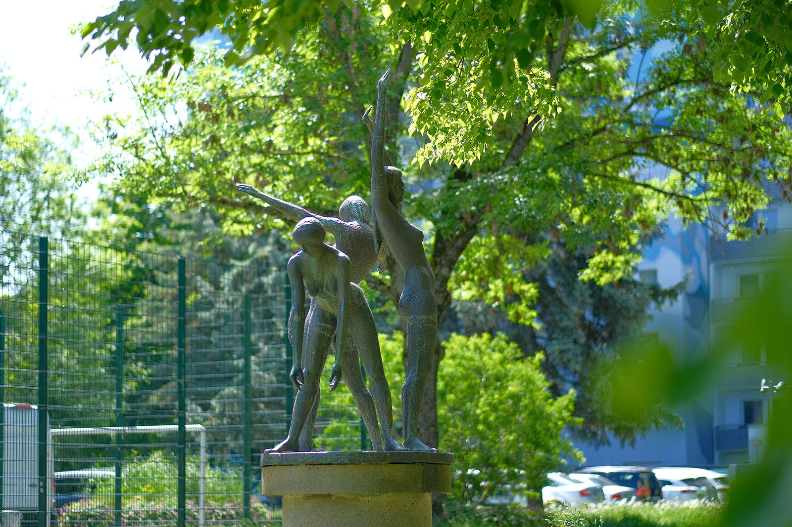
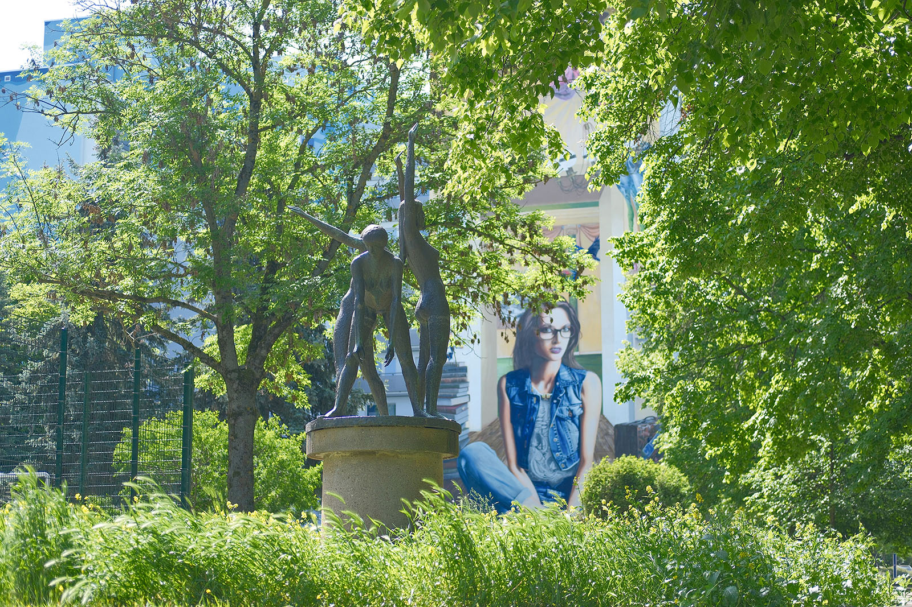
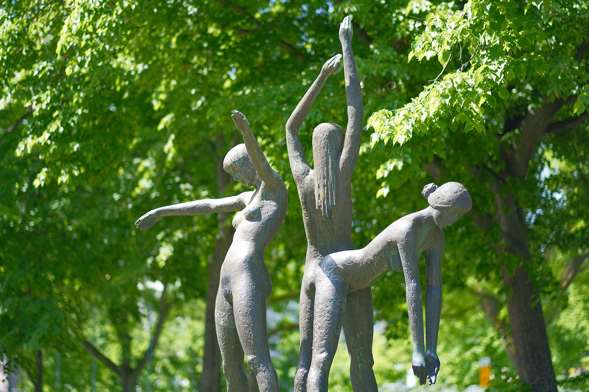
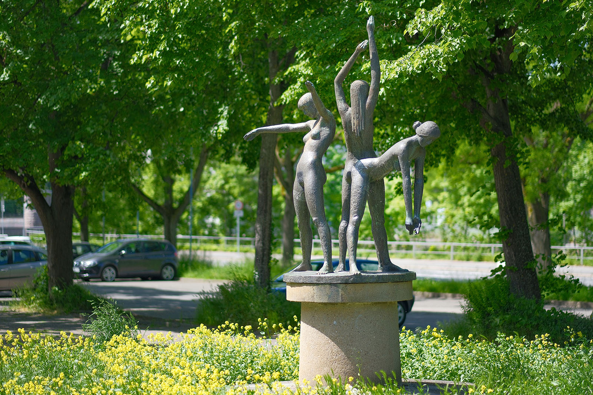

Recherche und Werkbeschreibung: Roman Pilz. Fotografien: Frank Krüger. Text und Bild wechseln sich wie in einem Magazin ab. Ein Klick auf ein Bild öffnet die Großansicht.
Die Lebensfreude war, wenn man so will, Gottfried Kohls Leitmotiv. Während er zu Beginn seines Schaffens, vor allem während seiner Ausbildung als Schnitzer, noch einige kantige Porträtköpfe und sogar christliche Motive schuf, widmete er sich später vor allem der Darstellung der schönen Seiten des Lebens: Tiere, Kinder, Familie und in besonderem Maße, dem Akt.
Während seiner Stationierung als Soldat in Italien findet er erstmals Zeit und ein Modell, das ihm zur freieren, leichteren Erfassung des weiblichen Körpers Anlass bietet. Tanz und Reisen ans Meer liefern ihm Anfang der 1950er Jahre Anlass zur weiteren Ausformulierung seines Lieblings-Sujets.
Die meist jugendlichen und weiblichen Figuren sind grazil geformt, hochgewachsen und schlank, reduziert auf sanfte ebenmäßig geglättete Konturen. Bestimmt huldigt Kohl hier vor allem dem männlichen Ideal von Schönheit und Reiz, das aber durchaus in der Kunstgeschichte zum verallgemeinerten Symbol der Jugend und Schönheit an sich wurde.

Egal, ob Frau oder Mann, Kohl packt seine Figuren im Moment. Seine Protagonisten sonnen oder baden, so wie bei dieser Brunnenplastik, sind mitten in der Bewegung, bei Sport und Spiel, mitten in der Versenkung und beim Träumen, konzentriert oder lässig, aber alles andere als statisch oder pathetisch. Dieser Gestus scheint dem Freiberger nicht zu liegen und so tauchen in seinem Werk nur vereinzelte Auftragsarbeiten auf, die als Thema das Gedenken an bedeutende Persönlichkeiten oder zentrale Momente der sozialistischen Geschichtsschreibung haben (Als Beispiel, das die Regel bestätigt, kann in Chemnitz auf die drei Reliefmedaillons hingewiesen werden, die Teil des Ehrenhains der Sozialisten am Städtischen Friedhof in Bernsdorf sind).
Auch die drei jugendlichen Badenden sind als Gruppe wunderschön aufeinander abgestimmt, in abgestuften, aber natürlichen Haltungen um eine gedachte Mittelachse, positioniert. Diese Achse bildete ursprünglich eine sprudelnde Fontäne im Rücken der Mädchen, die aber heute, da der Brunnen nicht mehr in Funktion ist, durch unsere Fantasie genährt werden muss. Sie räkeln sich hinein ins kühle Nass: Die eine möchte mit den Fingerspitzen die Krone der hochquellenden Wassersäule haschen, die zweite versucht sich balancierend an diese zu lehnen und genießt das Wasser, das über ihre Schultern strömt, die dritte beugt sich vorn über, um die fallenden Tropfen über die Arme und ihre Lenden herablaufen zu lassen. So schön kann ein Sommertag am Wasser sein!

Doch auch wenn kein Wasser unter den Füßen der hoch auf dem Sockel stehenden, unbekümmerten Mädchen fließt, sie zeigen weiter Haltung und animieren vielleicht den ein oder anderen zur Gymnastik im Freien, auf den Wegen und Wiesen rund um das Rund des ehemaligen Brunnenbeckens.
Oder wir sehen die verschiedenen Posen als Dehn- und Lockerungsübungen vor einer Laufrunde, die uns vielleicht zu weiteren Zeugnissen der Lebensfreude von Gottfried Kohl in Chemnitz führt: zur Mutter mit Kind am Klinikum Chemnitz, zu zwei Badenden an einem weiterhin nassen Teich im Flemminggebiet oder zum flirtenden Studentenpaar an der Universität in der Reichenhainer Straße.

Auf dem Trockenen
Der „Brunnen der Jugend/Badende/Mädchen/Lebensfreude“ (1980) von Gottfried Kohl in der Mühlenstraße
